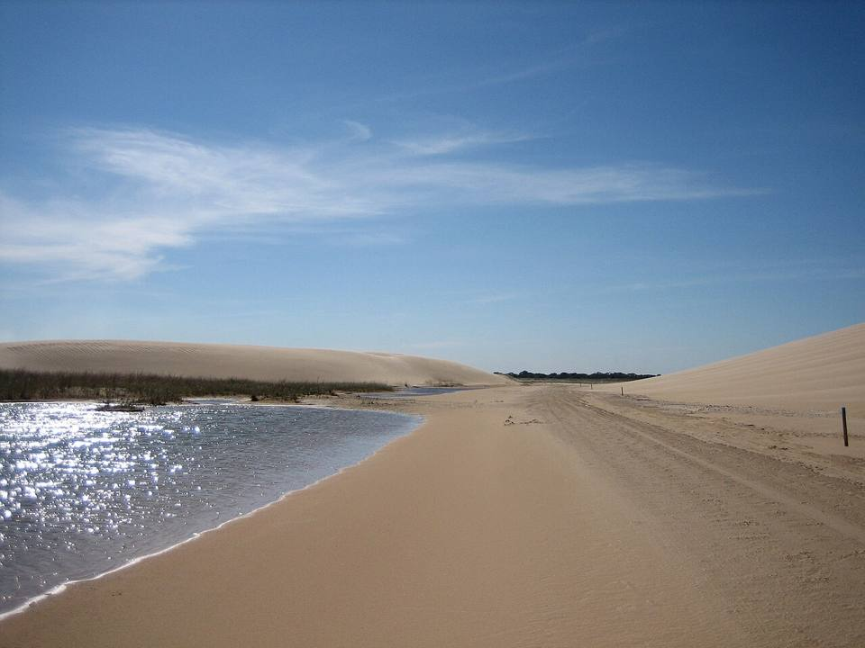
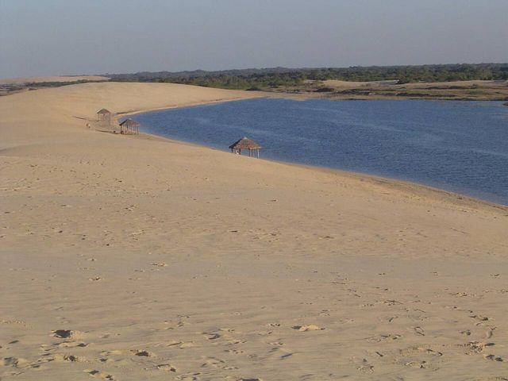
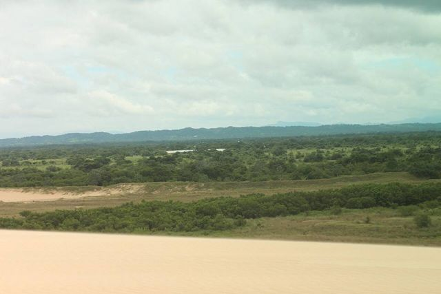

Lomas de Arena
Santa Cruz Department · Nature and hiking

Just south of Santa Cruz, white sand dunes rise out of tropical vegetation, with lagoons you can swim in. You can go sandboarding and feel like you're in a little desert in the middle of the forest.
400 maltitude
1 dayto spend there
Things to do
- Sandboarding
- Swimming in the lagoons
What to eat
- Sonso de yucaCassava and cheese dough grilled on a skewer. A speciality of the east, eaten hot.
- Tropical fruitMangoes, pineapples, papayas, achachairú (a small tangy fruit) and fresh juices everywhere for a few bolivianos.
Tip. Half a day by 4x4 from Santa Cruz.
How to get to Lomas de Arena
Santa Cruz Road (bus, car) · 45 min
Taxi or tour (sandy track: 4x4).
Photos of Lomas de Arena




More places in this region
 Santa Cruz de la SierraThe big, modern tropical city of the east, with an international airport (Viru Viru).
Santa Cruz de la SierraThe big, modern tropical city of the east, with an international airport (Viru Viru). CotocaThe sanctuary of the Virgin of Cotoca and its potters, 20 km from Santa Cruz.
CotocaThe sanctuary of the Virgin of Cotoca and its potters, 20 km from Santa Cruz. EspejillosNatural pools and waterfalls on a river near Santa Cruz.
EspejillosNatural pools and waterfalls on a river near Santa Cruz. Laguna VolcánA lake hidden in a bowl of forested mountains.
Laguna VolcánA lake hidden in a bowl of forested mountains. SamaipataA bohemian village between the Andes and the forest: El Fuerte (UNESCO) and Amboró park.
SamaipataA bohemian village between the Andes and the forest: El Fuerte (UNESCO) and Amboró park. Amboró National ParkCloud forests and tree ferns, very rich in birds.
Amboró National ParkCloud forests and tree ferns, very rich in birds. Buena Vista (northern Amboró)A small village at the foot of Amboró park, on the rainforest side: rivers, birds and coffee.
Buena Vista (northern Amboró)A small village at the foot of Amboró park, on the rainforest side: rivers, birds and coffee. VallegrandeA small colonial mountain town at the heart of the Che Route.
VallegrandeA small colonial mountain town at the heart of the Che Route. La HigueraThe hamlet where Che was executed in 1967, now a place of memory.
La HigueraThe hamlet where Che was executed in 1967, now a place of memory.